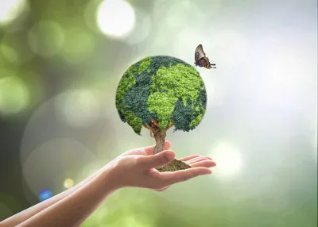
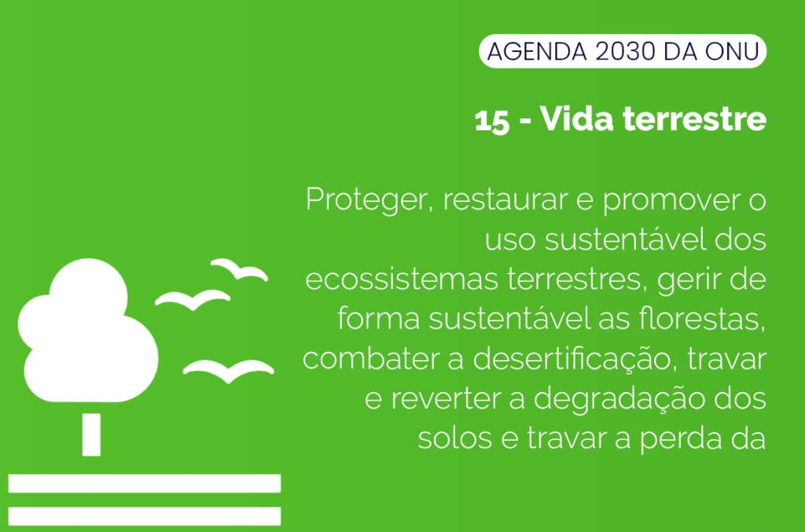
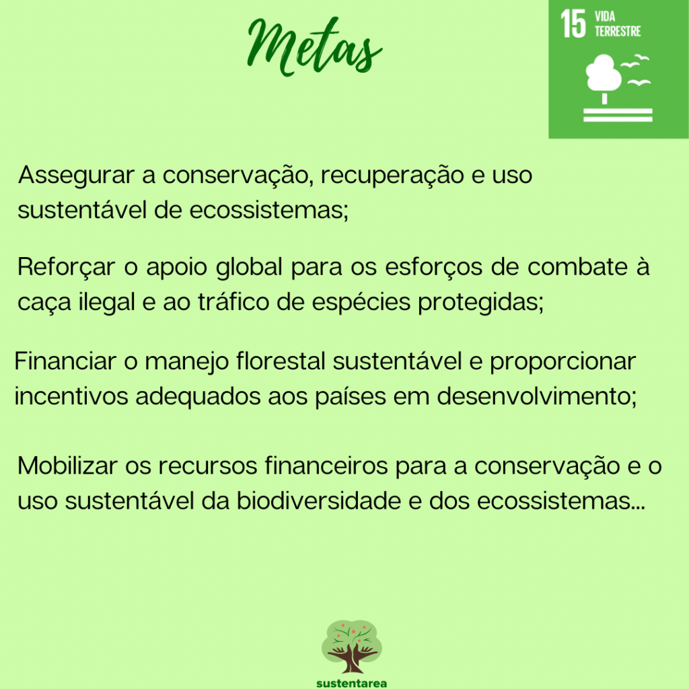

VIDA TERRESTRE
‘‘Proteger, recuperar e promover o uso sustentável dos ecossistemas terrestres, gerir de forma sustentável as florestas, combater a desertificação, deter e reverter a degradação da terra e deter a perda.’’ O mote que movimenta o objetivo que trabalharemos hoje, nos inspira a pensar e agir para a mudança do atual cenário de deterioração do meio ambiente.As espécies estão entrando em extinção cada vez mais rápido, seja por queimadas, desmatamento ou até pela falta de gelo. Também, só algumas delas estão sendo analisadas. Então, no fim a proporção deve ser bem maior, e isso pode estar ameaçando nossas vidas também. Cada dia mais espécies são indicadas em listas de extinção, e já que nem todas estão sendo catalogadas, em função da biodiversidade que é perdida, gera grande preocupação a cientistas, biólogos e toda a defesa dos animais. A Revista Galileu mostrou que o último espécime de rinoceronte morreu e entrou em extinção e a ONG WWF apresentou o mico leão dourado como quase em extinção há muito tempo. No Brasil, com o Sistema Nacional de Unidades de Conservação (SNUC) há espaço para proteger os animais e as pesquisas confirmam que respeitar o habitat significa a sobrevivência de animais que sofrem com a devastação ambiental. Desta forma, as áreas de preservação ou conservação abrangem pontos inacessíveis ao homem, reduzindo a devastação e deixando a vida selvagem em seu próprio ritmo. A onça pintada também pode entrar em extinção por conta dos habitat, mas os projetos brasileiros “conservação a onça” têm tido muito sucesso e a ONU meio ambiente é uma das suas protetoras. A National Geographic mostra sobre a questão dos habitats, que sofremos uma grande perda e que a principal ameaça somos nós destruindo o planeta terra. Segundo a revista, estamos regredindo rapidamente devido ao Antropoceno, uma nova era geológica que seria a Idade do Homem: “Em outras palavras, desta vez, o asteroide somos nós.”
Vida terrestre no contexto brasileiro os seres vivos dependem do meio ambiente para realização das mais diversas e básicas tarefas, especialmente quando se considera o caráter de sobrevivência, na busca e obtenção de elementos como água, alimento, ar e abrigo. Os animais e a vegetação se adaptam ao ambiente no qual vivem, porém, essas adaptações não são imediatas e extremas, principalmente quando consideramos o alto nível de degradação de suas ambiências.
clique aquiA IMPORTÂCIA DA VIDA TERRESTRE?
regulam a umidade e a temperatura da Terra e protegem inúmeros recursos vitais para a nossa vida, como fontes de rios, alimentos e até mesmo substâncias medicinais.
OBJETIVO DO DESENVOLVIMENTO SUTESTENTÁVEL
Emprego digno e crescimento econômico, vida sobre a terra, alimentação orgânica e fome zero. Energia acessível e limpa, igualdade de gênero, educação de qualidade, emprego digno e crescimento econômico.
O QUE É MANEJO FLORESTAL SUSTENTÁVEL
As florestas sustentáveis são aquelas cujo manejo permite a provisão de recursos preservando os restantes usos e serviços. A sustentabilidade garante sua regeneração sendo essencial para manter a atividade econômica ligada à sua exploração.
COMO CONSERVAR A VIDA TERRESTRE
Preserve as árvores. ... Cuide bem dos cursos de água. ... Não pare agora... ... Nunca compre animais silvestres sem registro. ... Cuide bem do seu lixo. ... Reutilize, reaproveite e recicle tudo que for possível. ... Reduza o consumo de água. ... Reduza o consumo de energia elétrica.
 